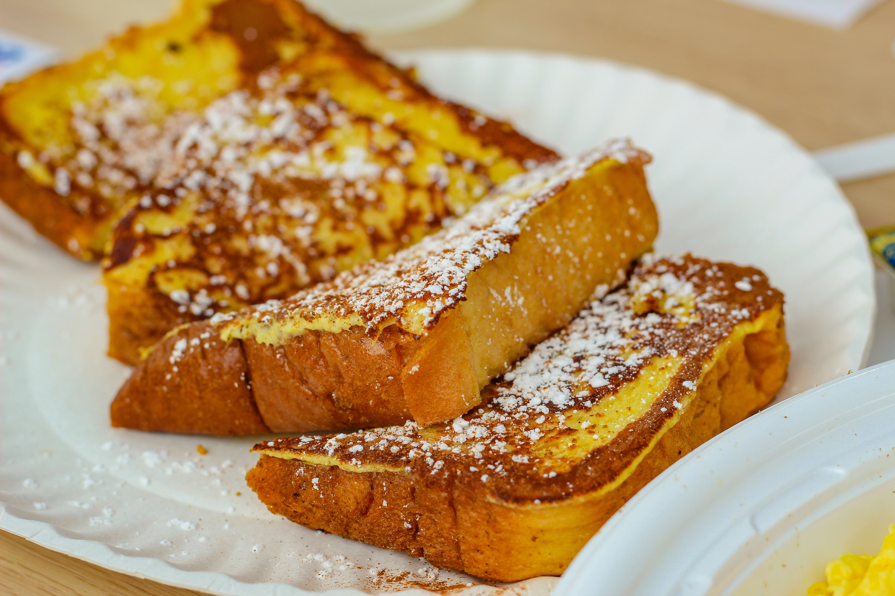

French Toast
Home

Description
Indulge your taste buds in a symphony of flavors with our mouthwatering French Toast recipe. This classic breakfast favorite has been elevated to new heights, combining the sweetness of maple syrup, the warmth of cinnamon, and the creaminess of vanilla-infused custard. Prepare to embark on a culinary journey that will leave you craving more.
Prepare to be transported to a French café with every mouthful of this French Toast Extravaganza, where simplicity meets elegance, and taste becomes an unforgettable memory. Bon appétit!
Ingredients
- 6 thick slices of day-old brioche or challah bread (preferably stale for better absorption)
- 4 large eggs
- 1 cup whole milk
- 1 tablespoon granulated sugar
- 1 teaspoon pure vanilla extract
- 1/2 teaspoon ground cinnamon
- Pinch of salt
- Butter, for greasing the pan
- Pure maple syrup, fresh berries, and powdered sugar for serving
Steps
- In a large mixing bowl, whisk together the eggs, milk, sugar, vanilla extract, ground cinnamon, and a pinch of salt until well combined. The custard should be smooth and fragrant, setting the stage for the delectable French Toast.
- Place the slices of brioche or challah into the custard mixture, ensuring each piece is thoroughly coated on both sides. Allow the bread to soak in the custard for a few seconds, absorbing the richness of flavors.
- In a non-stick skillet or griddle, melt a generous knob of butter over medium heat. Once the butter begins to sizzle, add the soaked bread slices to the pan, being cautious not to overcrowd the cooking surface.
- Cook the French Toast for 2-3 minutes on each side, or until they develop a beautiful golden brown hue. The exterior should be crisp, while the interior remains moist and tender, a perfect harmony of textures.
- Once all the slices are cooked, transfer them to a plate and keep them warm in the oven at a low temperature.
- Now, the pièce de résistance: presentation. Arrange the French Toast on a serving platter, drizzling a generous stream of pure maple syrup over the top. Garnish with a handful of fresh berries, adding a burst of color and freshness. Finally, sprinkle a light dusting of powdered sugar to create an eye-catching finish.
- Gather your loved ones around the table and serve the French Toast while it's still warm. Enjoy the blend of flavors and textures as you savor each delightful bite. This recipe is perfect for a leisurely weekend brunch, a special occasion, or any morning deserving of an extraordinary breakfast experience.